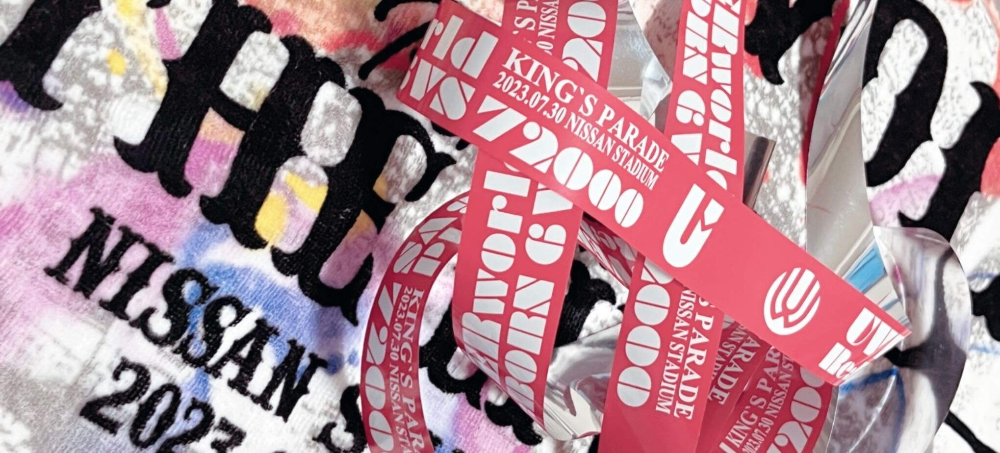

小澤 頼人
武蔵野大学 データサイエンス学部 データサイエンス学科
生年月日 : 2003年1月23日
趣味 : ライブやフェスに行くこと、サッカー観戦
大学ではアプリ開発、データ分析、機械学習、深層学習などを学んでいます。 一つの通過点としてフルスタックエンジニアを目指しています。 現在、友人と０からアプリ開発をフルスタックエンジニアとしての開発の向き合い方を再現しながら実際に取り組んでいます。 そこで身につけるべき知識、考え方を分析し得たものを成長できる環境の中でキャリアを通じて高めていき目標を達成したいと考えています。
経歴
2018年4月〜2021年3月 長野県伊那北高等学校
2021年4月〜 武蔵野大学 データサイエンス学部
データサイエンス学科
職歴
2023年6月〜8月 EnterTech Lab株式会社（インターン）
音楽NFTマーケットプレイスサービス「.mura」の開発にバックエンドエンジニアとして携わりました。 各アーティストの売上データを加工してバッチ処理を行い毎月の売上データをセールスレポートとしてメールで送信されるシステムを構築しました。
2023年10月〜 株式会社ラクーンホールディングス（インターン）
売掛保証サービス「Uriho」の開発にフロントエンド、バックエンド両方で携わっています。
主な業務例
- 会員サイトにて顧客の意見を届けられるようにご要望フォームを作成しご要望が送信されることで通知が管理人に届くシステムを構築しサービスの向上を測った。
- 書類申請において過去の履歴の閲覧データを見やすく表示し申請条件に応じて書類の手続きの方向性を自動的に分別するシステムを構築